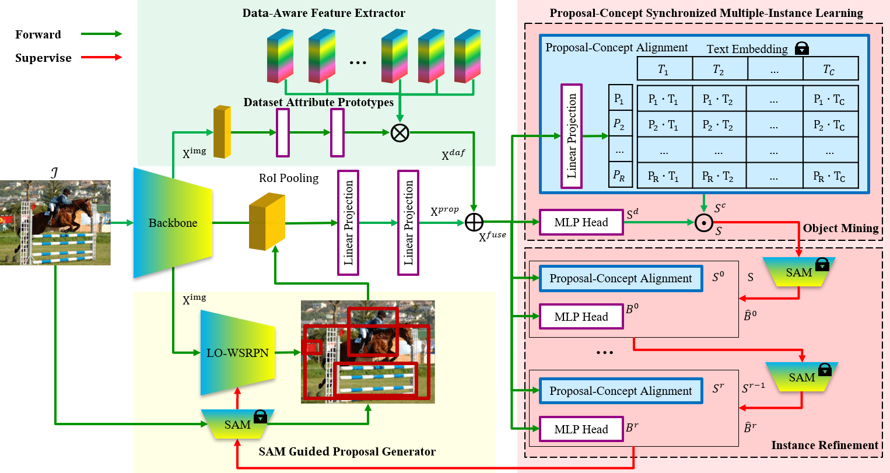
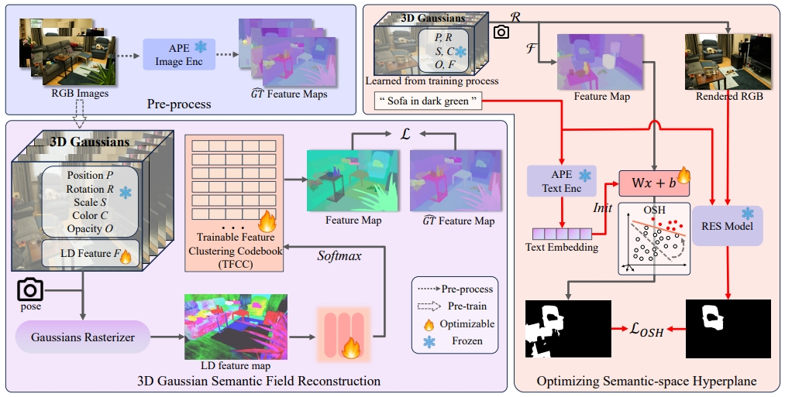
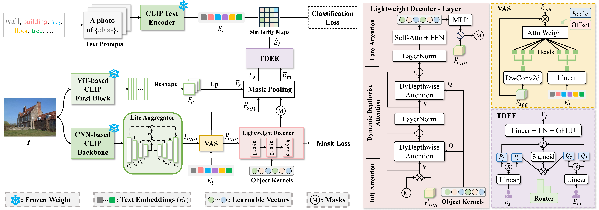
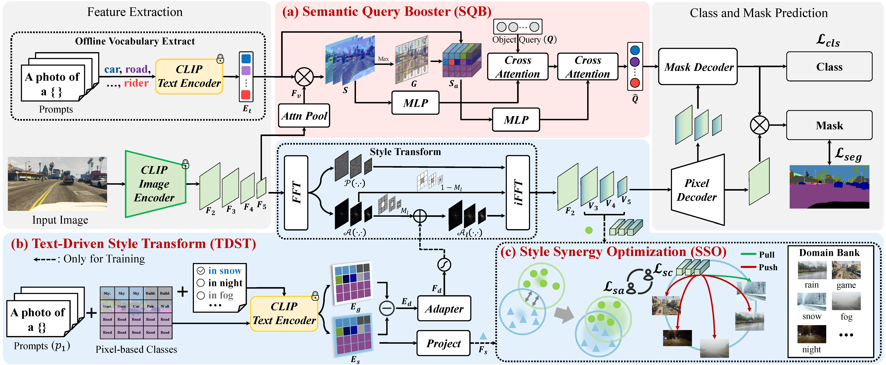
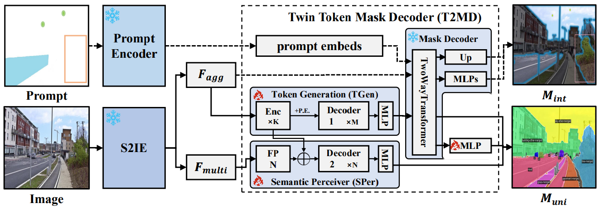
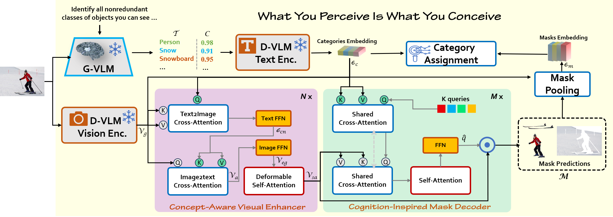
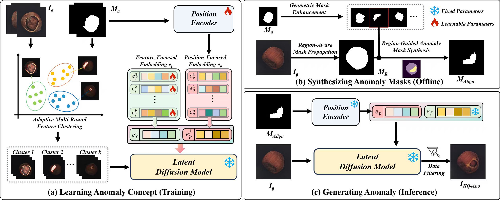
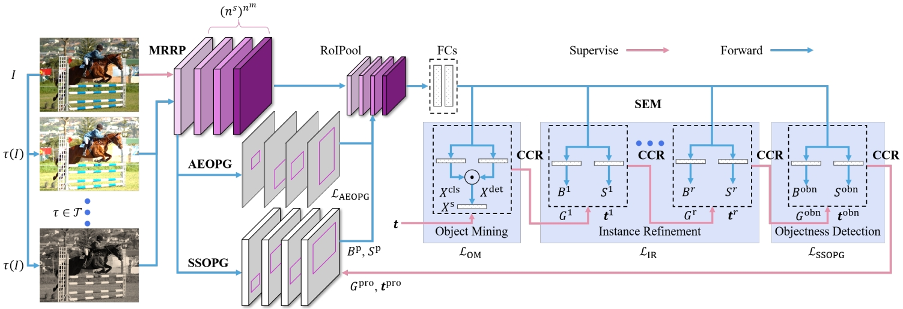
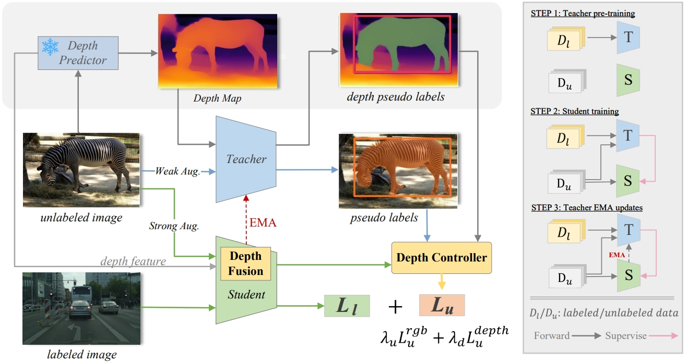

Jianghang Lin | 林将航Media Analytics and Computing (MAC) Lab, Xiamen University, Xiamen, China. Emails: hunterjlin007 AT gmail.com (best), hunterjlin007 AT stu.xmu.edu.cn [Goolge Scholar] [GitHub] [Curriculum Vitae] (Last updated on 31 July, 2025) |

|
[Biography] [Publications] [Honors and Awards]
Biography
I am currently a Ph.D student in Xiamen University, advised by Prof. Liujuan Cao and Prof. Rongrong Ji. My research interests are in Computer Vision, Multimodal and Machine Learning. Recently, I focus on Open Vocabulary Learning and Large Visual-Language Model.
- 09/2023 -- Now: Ph.D in Computer Science and Technology, Xiamen University, Xiamen, China
- 05/2025 -- Now: Research Intern, Medical multimodal large model of ByteDance Soaring Star Talent Program, ByteDance, Shanghai, China
- 01/2024 -- 05/2024: Research Intern, CATL, Ningde, China
- 09/2020 -- 07/2023: M.S. in Pattern Recognition and Intelligent System, Xiamen University, Xiamen, China
- 12/2022 -- 05/2023: Research Intern, CATL, Ningde, China
- 02/2022 -- 08/2022: Research Intern under the supervision of Dr. Yunhang Shen, Tencent Youtu Lab, Shanghai, China
- 07/2020 -- 08/2020: Development Intern, Ruijie Networks, Fuzhou, China
- 09/2016 -- 07/2020: B.S. in Software Engineering, Fuzhou University, Fuzhou, China
Publications
Conference
 |
Peng Mi*, Jianghang Lin*, Yiyi Zhou*, Yunhang Shen, Gen Luo, Xiaoshuai Sun, Liujuan Cao✉, Rongrong Fu, Qiang Xu, Rongrong Ji
Active Teacher for Semi-Supervised Object Detection IEEE/CVF Conference on Computer Vision and Pattern Recognition (CVPR), 2022 [pdf] [code] (*Equal Contribution) |
|  | Jianghang Lin, Yunhang Shen, Bingquan Wang, Shaohui Lin, Ke Li, Liujuan Cao✉
Weakly Supervised Open-Vocabulary Object Detection The 38th Annual AAAI Conference on Artificial Intelligence (AAAI), 2024 [pdf] [code] |
 |
Pengfei Yue*, Jianghang Lin*, Shengchuan Zhang✉, Jie Hu, Yilin Lu, Hongwei Niu, Haixin Ding, Yan Zhang, Guannan Jiang, Liujuan Cao, Rongrong Ji
Adaptive Selection based Referring lmage Segmentation Proceedings of the 32st ACM International Conference on Multimedia (ACM MM), 2024 [pdf] [code] (*Equal Contribution) |
|  | Yansong Qu*, Shaohui Dai*, Xinyang Li, Jianghang Lin, Liujuan Cao✉, Shengchuan Zhang, Rongrong Ji
GOI: Find 3D Gaussians of Interest with an Optimizable Open-vocabulary Semantic-space Hyperplane Proceedings of the 32st ACM International Conference on Multimedia (ACM MM), 2024 [pdf] [code] (*Equal Contribution) |
|  | Hongwei Niu*, Jie Hu*, Jianghang Lin*, Guannan Jiang, Shengchuan Zhang✉
EOV-Seg: Efficient Open-Vocabulary Panoptic Segmentation The 39th Annual AAAI Conference on Artificial Intelligence (AAAI), 2025 [pdf] [code] (*Equal Contribution) |
|  | Hongwei Niu*, Linhuang Xie*, Jianghang Lin*, Shengchuan Zhang✉
Exploring Semantic Consistency and Style Diversity for Domain Generalized Semantic Segmentation The 39th Annual AAAI Conference on Artificial Intelligence (AAAI), 2025 [pdf] [code] (*Equal Contribution) |
|  | Xiaofeng Jin, Jie Hu, Jianghang Lin, Shengchuan Zhang✉, Liujuan Cao
U-SAM: Upgrade Segment Anything Model With Semantic-Aware and Memory-Efficient IEEE International Conference on Acoustics, Speech and Signal Processing (ICASSP), 2025 [pdf] [code] |
|  | Jianghang Lin, Yue Hu, Jiangtao Shen, Yunhang Shen, Liujuan Cao✉, Shengchuan Zhang, Rongrong Ji
What You Perceive Is What You Conceive: A Cognition-Inspired Framework for Open Vocabulary Image Segmentation Proceedings of the 33st ACM International Conference on Multimedia (ACM MM), 2025 [pdf] [code] |
|  | Yilin Lu*, Jianghang Lin*, Linhuang Xie, Kai Zhao, Yansong Qu, Shengchuan Zhang✉, Liujuan Cao, Rongrong Ji
Generate Aligned Anomaly: Region-Guided Few-Shot Anomaly Image-Mask Pair Synthesis for Industrial Inspection Proceedings of the 33st ACM International Conference on Multimedia (ACM MM), 2025 [pdf] [code] (*Equal Contribution) |
Preprint
|  | Liujuan Cao, Jianghang Lin, Zebo Hong, Yunhang Shen✉, Shaohui Lin, Chao Chen, Rongrong Ji
HUWSOD: Holistic Self-training for Unified Weakly Supervised Object Detection arXiv preprint arXiv:2406.19394, 2024 [arXiv] [code] |
|  | Xin Chen, Jie Hu, Xiawu Zheng, Jianghang Lin, Liujuan Cao✉, Rongrong Ji
Depth-Guided Semi-Supervised Instance Segmentation arXiv preprint arXiv:2406.17413, 2024 [arXiv] [code] |
Honors and Awards
- Second Prize of The 6th "China Software Cup" Software Design Competition for College Students, 2017
- Second Prize of The 8th National College Students' service outsourcing entrepreneurship and innovation competition (P.R.China), 2017